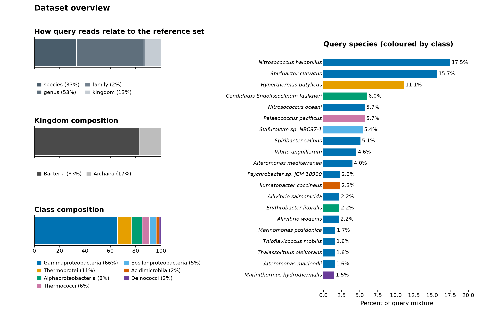
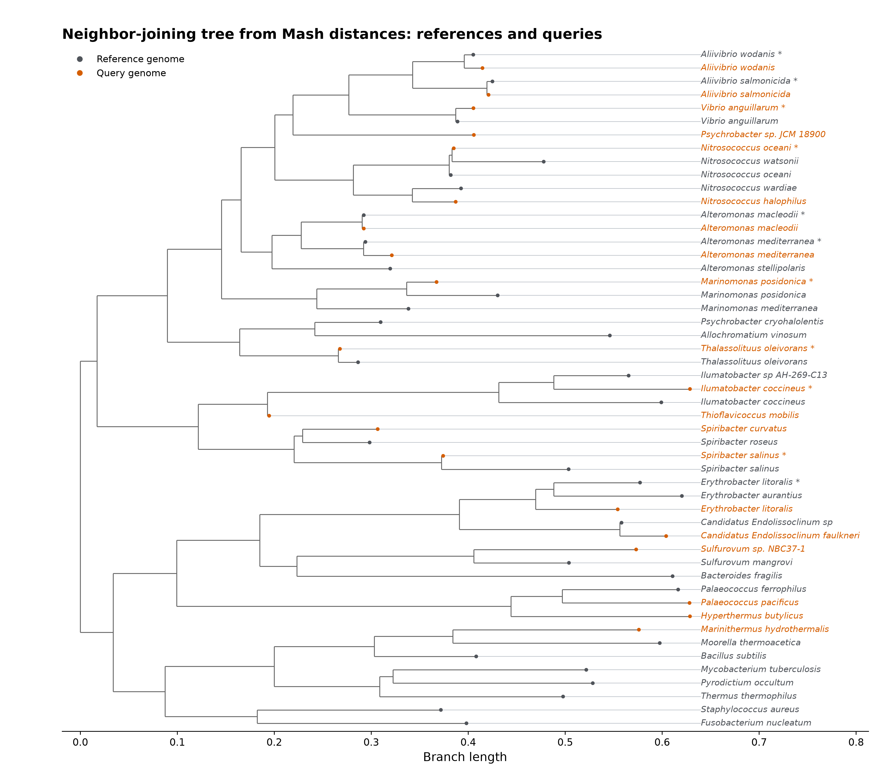

Dataset
Query mixture of reads
- A controlled (mock) metagenomic sample: 100,000 simulated Illumina reads from 20 query genomes.
- The mixture is based on an abundance profile mimicking a marine environment.
- Queries in this mixture differ in terms of abundances, taxonomies, and their novelty level.
We will be comparing our results to the known ground truth profile given in data/profile.tsv!
Abundances of queries and taxonomic profiles
- Spanning two kingdoms, Bacteria (83%) and Archaea (17%), and seven classes:
- Gammaproteobacteria (~66%)
- Thermoprotei (~11%)
- Alphaproteobacteria (~8%)
- Thermococci (~6%)
- Epsilonproteobacteria (~5%)
- Acidimicrobiia (~2%)
- Deinococci (~2%)
Reference genomes and novelty levels
To see how a certain taxon can be identified depending on its representation in a reference database, we control its novelty level by measuring the lowest shared taxon of the closest reference genome.
As it will be discussed in the next section in more detail, we will be using two different sets of reference genomes:
- a 31-genome toy reference set for controlled novelty,
- a small but diverse microbial index (Web of Life) spanning many taxa.
For the Web of Life, we do not control the novelty but we do for the toy reference set. Some queries match a reference at species rank (same taxon, different individual genomes). Others share only genus, family, or kingdom with their best matching reference, in terms of the ANI between them, akin to the phylogenetic distance measured in branch lengths.
If a read comes from a genome X of species A under genus B, and if the closest reference Y belongs to the same genus B but not the same species A, then the novelty level would be genus level.
By novelty-level (the lowest shared taxonomic rank with the closest reference):
- species: 11 queries (33% of reads)
- genus: 6 queries (53% of reads)
- family: 1 query (2% of reads)
- kingdom: 2 queries (13% of reads)

Figure 1. Dataset overview. Left: What portion of the query reads relates to the toy reference set by novelty, then kingdom and class level abundances.
Right: All 20 query species with relative abundances (coloured by class).
As novelty increases (species to kingdom), it becomes more difficult to identify a read and incorporate it in the analysis.
Reference genome set
- References cover two kingdoms (Bacteria and Archaea), five phyla (Proteobacteria, Actinobacteria, Deinococcus-Thermus, Crenarchaeota, and Euryarchaeota), and seven classes (Gammaproteobacteria, Alphaproteobacteria, Epsilonproteobacteria, Acidimicrobiia, Deinococci, Thermoprotei, and Thermococci).
- Below we show a phylogeny consisting of both reference genomes and query genomes.
- Novelty of each query can also be understood as the branch length to the closest reference in this phylogeny.
- We will use a similar phylogeny after excluding the queries for phylogenetic placement of the reads in the query mixture.

Figure 2. A toy phylogeny built using Mash distances and neighbor-joining, queries are colored in red. Although this may not be the most reliable method for obtaining a microbial phylogeny (as Mash distances do not extend well to highly divergent genomes, which we have in our case), it is good enough for our purposes. The same species may appear at tips both as query and reference, which correspond to queries that are least novel (another genome from the exact same species is present in the reference).
Goals
- Abundant and low-novelty query reads should be identified correctly with low distances.
- High novelty reads should be mapped correctly to corresponding references but with potentially high distances.
- Rare and low-abundance queries should be detected with correct abundances.
- Phylogenetic placement should associate queries with correct branches, reflecting the overall composition at a higher resolution than a taxonomy.
Summary table
| Query species | Kingdom | Class | Abundance | Novelty level |
|---|---|---|---|---|
| Nitrosococcus halophilus | Bacteria | Gammaproteobacteria | 17.5% | genus |
| Spiribacter curvatus | Bacteria | Gammaproteobacteria | 15.7% | genus |
| Hyperthermus butylicus | Archaea | Thermoprotei | 11.1% | kingdom |
| Candidatus Endolissoclinum faulkneri | Bacteria | Alphaproteobacteria | 6.0% | genus |
| Nitrosococcus oceani | Bacteria | Gammaproteobacteria | 5.7% | species |
| Palaeococcus pacificus | Archaea | Thermococci | 5.7% | genus |
| Sulfurovum sp. NBC37-1 | Bacteria | Epsilonproteobacteria | 5.4% | genus |
| Spiribacter salinus | Bacteria | Gammaproteobacteria | 5.1% | species |
| Vibrio anguillarum | Bacteria | Gammaproteobacteria | 4.6% | species |
| Alteromonas mediterranea | Bacteria | Gammaproteobacteria | 4.0% | species |
| Psychrobacter sp. JCM 18900 | Bacteria | Gammaproteobacteria | 2.3% | genus |
| Ilumatobacter coccineus | Bacteria | Acidimicrobiia | 2.3% | species |
| Aliivibrio salmonicida | Bacteria | Gammaproteobacteria | 2.2% | species |
| Erythrobacter litoralis | Bacteria | Alphaproteobacteria | 2.2% | species |
| Aliivibrio wodanis | Bacteria | Gammaproteobacteria | 2.2% | species |
| Marinomonas posidonica | Bacteria | Gammaproteobacteria | 1.7% | species |
| Thioflavicoccus mobilis | Bacteria | Gammaproteobacteria | 1.6% | family |
| Thalassolituus oleivorans | Bacteria | Gammaproteobacteria | 1.6% | species |
| Alteromonas macleodii | Bacteria | Gammaproteobacteria | 1.6% | species |
| Marinithermus hydrothermalis | Bacteria | Deinococci | 1.5% | kingdom |